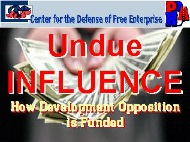
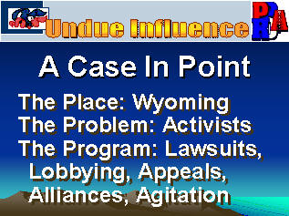
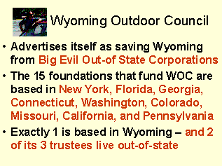
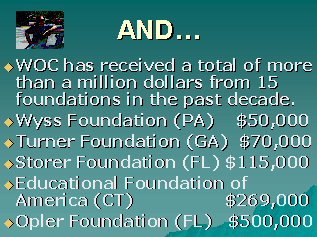
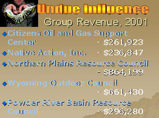

Center
for the Defense of Free Enterprise
Center
for the Defense of Free Enterprise
Ron Arnold gives Panhandle Producers and Royalty Owners Association guide to who's funding the opposition
HOME ISSUES OPPOSITION PROJECTS DEFENDERS WISE USE BOOKSTORE ARCHIVE
|
Ron Arnold gives Panhandle Producers and Royalty Owners Association guide to who's funding the opposition |
|
HOME ISSUES OPPOSITION PROJECTS DEFENDERS WISE USE BOOKSTORE ARCHIVE |
RON ARNOLD presented his "Undue Influence: How Development Opposition is Funded" PowerPoint show to the Panhandle Producers and Royalty Owners Association in Amarillo, Texas on May 19 , 2004. PPROA is an oil and gas trade group based in the Texas Panhandle.
In a presentation based on his best-selling book, Undue Influence: Wealthy Foundations, Grant-Driven Environmental Groups and Zealous Bureaucrats That Control Your Future, Arnold showed exactly who is funding the anti-energy, anti-industry movement, unfolding the facts in a case history of Wyoming.
 |
 |
Arnold debunked one anti-industry group, the Wyoming Outdoor Council, for its claims of being home-grown by showing where it gets its foundation money: almost entirely from out-of-state. Arnold backed up his assertions with the facts, all obtained from IRS Form 990 annual reports of wealthy foundations that give money to the group, even to details including amounts.
 |
 |
Arnold revealed the network of Wyoming-area anti-industry groups being funded by big foundations, again using IRS Form 990 grant information. Digging into the motives of the golden donors who give anti-industry groups money, Arnold quoted from well-documented studies of wealthy people.
 |
 |
Arnold alerted PPROA attendees to potential lawsuits aimed at stopping all fossil fuel energy production in America. After the conference, Arnold was invited to shoot in a sporting clay tournament at the Amarillo Gun Club, and received the well-earned "Tail Gunner" plaque.
RETURN TO CENTER FOR THE DEFENSE OF FREE ENTERPRISE HOME PAGE